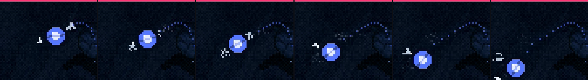

A Serpente: a bola viva
31/10/2026 · quarta rodada do cuspe quicante · nada foi commitado.
Os mísseis da chuva estão aprovados ("depois vemos o formato que eles farão"). Nada mudou neles.
Você, sobre as três bolas anteriores: "os propulsores ficaram desenhados na bola, eu pensei em algo mais parecido com jatos de propulsao de estabilzadores mesmo. Algo mais natural, todos os exemplos ficaram muito irreais e duros de movimento."
Nas opções, você escolheu: a bola de verdade + instável, brigando, com gás frio e branco. E a soltura: "Uma delas precisa sair antes e mais alta, a segunda meia altura e depois da 1 e assim sucessivamente."
O que mudou
- A bola não tem mais bocal desenhado. Os sopros saem da própria superfície dela: um clarão branco no ponto de saída e um jato curto de gás frio que abre e some. Não tem mais fogo nem chama fixa.
- Ela se move como uma bola de verdade. O arco é suave e ela perde altura a cada quique. Também gira no ar: a faixa atravessada nela mostra o giro, e a batida no casco transforma parte do atrito em giro. O achatamento na batida volta como uma mola, passando um pouco do ponto, em vez de estalar de volta.
- Ela é instável e os estabilizadores brigam. Um empurrão e uma torção que mudam devagar tiram a bola do rumo. Os estabilizadores não ficam ligados o tempo todo: cada sopro sai só quando já há correção suficiente acumulada, como os estabilizadores de uma nave de verdade. Por isso ela sai um pouco do rumo, o sopro a corrige e ela se acerta. Depois da batida, sopros dos dois lados freiam o giro.
- A soltura em degraus: a ciano sai primeiro e mais alto; a laranja sai depois, com metade da altura; a verde sai por último, com metade de novo.
- A animação usada aqui é a dos tiros normais, em que as três cabeças cospem uma de cada vez. Assim cada bola sai da boca aberta dela. A do quicante cospe as três juntas e não serve para a soltura em degraus; a animação própria do quicante em sequência eu gero depois que o movimento for aprovado.

Duas intensidades, para você calibrar
O rastro pontilhado só existe na maquete, para dar para ler o arco. O desenho da bola e dos sopros continua provisório.
Para você decidir
- O movimento ficou natural agora?
- A intensidade: brigando, mais calma ou um meio-termo?
- A soltura: está certa assim (a ciano alta, depois a laranja na metade, depois a verde na metade de novo, cerca de meio segundo entre uma e outra)?